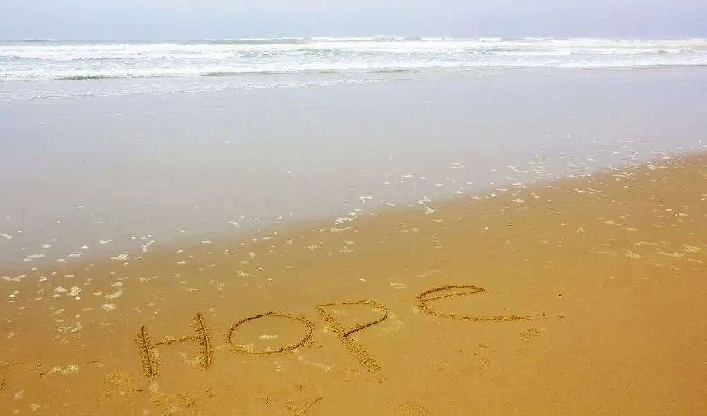

孖仔帮
公众号ID：twinsbang
关注
文|孖妈来了
网图|侵删
【帮主】圆圈妈妈：这是孖仔帮双胎专栏【孖妈来了】的第17篇文章，是一位双胞胎妈妈的投稿，家有哥哥弟弟一对，目前1岁＋。
很多人很羡慕双胞胎...
我说这句话的时候，在看的各位不要有反抗情绪，毕竟谁生谁知道，别人没生过不知道啊。
所以我引入了这篇投稿，让那些羡慕双胞胎的人都来瞧瞧，自以为幸福美满的双胞胎家庭实际上长啥样。
这篇没有华丽的词语，只有朴实的文字，却道出了众多双胞胎妈妈的心声。
我觉得吧，这至少是一个代表，一个缩影。
审稿时，看到一细节，感触颇深。
【孕28周才敢准备待产包，怕空欢喜一场】
真的跟我当年一样样啊，我整个孕期都没有告诉好友同事我怀的是双胎，等卸货了才官宣在朋友圈上。
我是真的刻意隐瞒，因为觉得没人能懂我那种甜蜜又苦涩的期待感，我太在乎了，所以特别害怕失去。
如果你们也深有体会，请直接拉到文末点赞，我统计下，到底有多少双胞胎妈妈把孕期的担惊受怕做到了全国统一。
刚查出双胞胎时，我和老公的反应有点南辕北辙，惊喜的是老公，惊吓的是我。
他忙着打电话给七姑姑八大姨道喜，准确地说是怼。
我们结婚3年了，备孕2年，肚子一直没有动静，经常被老家的人说三道四。我们也尝试过多种途径均告失败，已经做好了试管的准备，这次终于有了自己的孩子，还是一口气来两个，他这会儿终于扬眉吐气了。
我没有太多惊喜，备孕这么久，我早已心力交瘁，听到是双胞胎，又期待又害怕，不小心看了下度娘，盯着单绒双羊和被那些从未见过的并发症，吓到一身冷汗。
经过老公那个大喇叭一吹，我感觉全世界的人都知道我怀的是双胞胎。对此，我其实挺反感的，不知道为啥，我希望越少人知道越好。
同事都很羡慕我，说我很幸运，躺赚，别人三年才能抱俩，我这一胎就搞定俩。
可是，我真的高兴不起来，我天生体质差，个子矮，又瘦，连B超医生都替我捏把汗，说到后面会很辛苦的，我这小身板太弱了，不知道能不能保得住两个娃，还要我多吃啊，多注意啊，总之一大堆注意事项。
前两年为了怀上孩子，也是四处折腾，吃了不少苦，现在成功受孕后，也很受罪，孕吐反应大，前三个月吃啥吐啥，整个人都没力气，只好辞掉工作，在家里安胎。
但，这些我都可以忍受。
最让我担惊受怕的是，我怀的双胞胎是双胎妊娠中风险最大的那种，单绒双羊，网上说的那些并发症TTTs，生长受限...每天都像定时炸弹那样，不提起还好，一想起就心绞痛。
我常常偷偷掉眼泪，感觉好昏暗。
偶有朋友跟我道喜时，我总是苦笑，心里却在想，等孩子们生出来再说吧，现在说什么都太早了。
的确，我生性敏感多疑，太在乎这来之不易的两个宝宝了，总是担心出幺蛾子，最终空欢喜一场，直到28周，当真真切切地感受到那强烈的胎动后，我才开始准备待产包。
看着满屋子的新生儿用品，还有阳台上晾晒的小衣服，想象着笨手笨脚的我在给两个小人儿穿衣服，我心里暖暖的，很柔和。
我在想，难道这就是当妈妈的感觉？
36周＋3D，两宝宝出生了，是一对男宝宝。
这绝对是我人生的高光时刻，体质差又矮又瘦，155cm/75斤，竟然能熬到36周，我清楚地记得，主刀医生摸着我那青紫的巨肚，对我竖起了大拇指，十几个助产士围着我，赞叹不已。
两兄弟也超级给力，体重都有5斤多，评分10分，母婴同室。
更让我虚荣心爆表的是周边人艳羡的眼神，每次推着婴儿车出去散步或打疫苗，都会被围观，收获很多赞叹和祝福，尤其是老人家总是笑盈盈地对我说：“你太有福气了，两个儿子啊，太会生了。”
然而，虚荣的背后却是一片狼藉，两个小婴儿的到来，打破了家里原有的平衡，最明显的是经济状况入不敷出，我没有收入，家里全靠老公一人养全家。
我本身体质差，产后很虚弱，一直没有奶水，两孩子只能喝配方奶，以三天一罐奶粉的速度迅速地透支着囊中羞涩的我们；家中4位老人都过来帮忙带，开支更大了。
家有孩子的都知道，孩子就是四角吞金兽，这还是双倍的，要用到钱的地方实在太多了，就算再怎么节省，依然抵挡不住花钱如流水。
庞大的经济压力把我压得快喘不过气了，我经常会为了一点小事跟老公吵架，莫名其妙就想摔东西。
刚开始的几个月，除了那点虚荣感偶尔存在一下，我真的一点都不幸福，我在想，要是1个孩子该多好啊。
我可以像单胎妈妈那样，出月子了就能去做产康，练瑜伽，做美容，而不是关在房里暗无天日地喂奶，一个喂完再接着另外一个；
我也不用麻烦4个老人过来带娃，最后还是被两个娃累得人仰马翻，身体累心更累。
还有被两个孩子当个物品一样抢来抢去，没能好好享受与孩子独处的时光，经常感觉很愧疚，真的巴不得有三头六臂。
我无数次跟老公抱怨着：我只想要1个孩子，为什么老天爷非要给我2个？我能力有限啊，照顾不来啊...等发泄完又觉得很懊悔，抱着两孩子哭。
那段时间，真的好无助，那是一种无力感，恐惧感，好像我不管怎么努力，都会被碾压。
可能是生娃会转运，俩娃刚满3个月，老公升职了，薪水翻倍，但是要经常出差，一个月就回家一两次，
不知道为啥，我竟然有前所未有的期待和放松，我知道没有老公打下手，我会更辛苦，然后为了俩娃的奶粉钱，我忍了，认了，伪单亲也无妨。
孩子还没满6个月，我又婉拒了老人家的帮忙，担起1挑2的重任。
我知道，有老人帮着带固然轻松些，但也很心累，四位老人处不来，经常为了琐事闹情绪，我一个人伺候2小的吃喝拉撒，还得照顾4个老的敏感脆弱的心灵。
我只觉得，最身心疲惫的人才是我啊！
一人带俩娃，想想觉得很难，实际做起来更难，然而，办法总比困难多，刚开始事情太多太杂太细了，忙不过来，真的累到虚脱；没时间吃饭，喘口气的空档都没有，不敢生病，不敢睡觉，身心紧绷着，24小时都围着两孩子转。
后面慢慢熟悉，逐渐适应，形成自己的带娃习惯，培养了两孩子的规律作息，他们越来越好带了，我自己也越来越有信心，做事情也越来越得心应手了。
老公心疼地问我，一人带娃是什么体验？
我说，虽然累，但很实在，就是坦荡荡，自由自在，问心无愧的感觉。
老公瞬间红了眼眶，说看到了重生的我。
是的，我真的感觉重获新生了。
看着两孩子在自己的眼皮底下一天天长大，心里很踏实；孩子们也只粘着我，被需要的感觉 ，很自豪。
现在哥哥弟弟1岁了，我感觉松气很多，有了自己的时间，会经常在双胞胎社群分享自己的养育经验。
家有双胞胎，没有想象中那么美好，两个同时喂奶，嗷嗷待哺，不像其他有年龄差的兄弟姐妹，跟老大好好谈谈还能，让一让弟弟妹妹。
但双胞胎就不是，思想成熟度和心智都一样，不懂得等待，分享，为此家里也是经常战火不断。
老公出差回来会有3天假期，他都会尽心尽力地帮我，每次他回来，我就复活一次，好好放飞下自我，而每次休息就是我的一次自我救赎。
当妈的，特别是当双胞胎的妈妈，千万不要太较真，不要拘泥于细节，掌握大局即可，对某些小事睁一只眼闭一只眼就行，能做的尽量去做，做不到也不要太自责。
还有就是，当双胞胎的妈妈特别容易有挫败感，不管曾经少女的你多么意气风发，一旦碰上两只人类幼崽，很多涉及到的三观问题都会消失殆尽，很容易迷茫，患得患失。
这个时候，请务必要调整好心态，别钻牛角尖。
人，光是活着就已经竭尽全力了，还能养育一对双胞胎已经很不容易，不要再为难自己了。
教你一个办法吧，也是双胞胎社群的姐妹们教我的。
若带双胞胎觉得累了，丧了，就把两小只推出去走一走，接受路人的围观和艳羡，把虚荣心填满后，再回来继续娘仨的相爱相杀。
我经常这么做，哈哈，一直很管用哦。
-END-
作者/双胞胎妈妈
排版/圆圈妈妈
写手招募
如果你是爱分享的双胞胎爸爸或妈妈
欢迎投稿至孖仔帮【双胎专栏】
分享出你和双胞胎的成长故事
添加小助手微信twinsbang3
备注“投稿”
今日互动话题
#说真话，你有没有经常带双胞胎出门刷存在感？#

评论区聊一聊呗！
微信公众号：孖仔帮
ID : twinsbang
专注双胞胎孕育，养育，教育经验分享
扫码关注我们
点一下你会更好看耶

